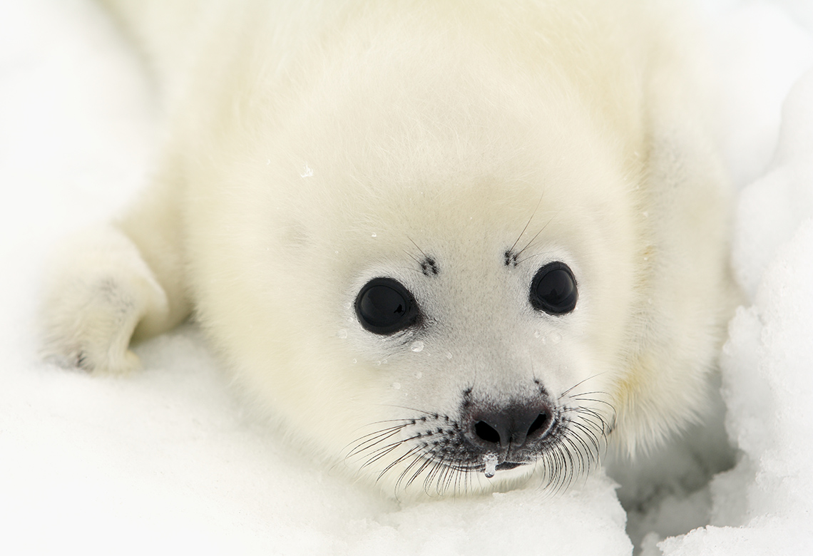

Тюлені живуть у холодних морях і океанах, переважно у прибережних водах. Їх їжа складається з риби та інших морських мешканців.
Тюлені мають товстий шар жиру, який допомагає їм виживати в холодних водах.

Факти про тюленів:
- Тюлені належать до родини ластоногих, що включає також моржів та морських левів.
- Тюлені можуть плавати на глибині до 600 метрів і залишатися під водою до 2 годин завдяки здатності зберігати кисень у м'язах і крові.
- Вони можуть спати під водою, роблячи короткі паузи для дихання, оскільки їхній організм пристосований до таких умов.
- Деякі види тюленів можуть переміщатися на льоду, ковзаючи на животі, використовуючи свої ласти для поштовхів.
- Тюлені мають товстий шар жиру, який називається лоєм, що допомагає їм зберігати тепло в холодній воді.